Name each tool and use it safely.
Read and listen
The voice reads the key points slowly. Pause any time.
- Seven safety practicesSafe attitude. Right tool. Organized area. Use tools correctly. Keep them in good condition. Carry them safely. Store them safely.
- HacksawThe blade cuts on the forward stroke. Aim for 40 to 60 strokes a minute. Keep at least 2 teeth on the work.
- Hacksaw bladesSoft metals (aluminum, brass, copper) use a 14 pitch blade. Hard or thin metal uses a 32 pitch blade.
- FilesKeep the file flat. Do not rock it. Draw filing uses a single cut file to finish a surface.
- Wire brushesMatch the brush to the metal. Stainless brush on stainless. Carbon steel brush on low-carbon steel.
- WrenchesNever turn nuts or bolts with a pipe wrench. 4 and 6 point sockets are stronger and go on impact wrenches.
- Allen keysSized across the flats of the hex. Imperial and metric.
- TapsStart with a taper tap. Plug tap for blind holes. Advance a half turn, back a quarter turn.
- Drill pressNever hold work by hand. Never leave the chuck key in the chuck. Stop the spindle before changing speed.
- Cutting fluidReduces friction, washes away chips, cools them. Never put it on a hot drill bit.
- Pilot holeA small hole that guides a bigger drill. Keep it only as big as needed.
Games
Pictures come straight from the course documents. Questions come from the course answer keys and safe work procedures. Each one names its source.
Loading…
Loading…
Loading…
Loading…
Loading…
Loading…
Pictures from the course
496 pictures. Open a document to see them. Tap a picture to make it bigger.
BCIT Trade Tools Module (169)


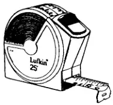

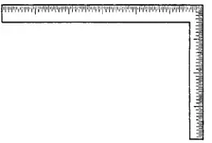

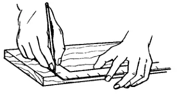

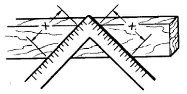

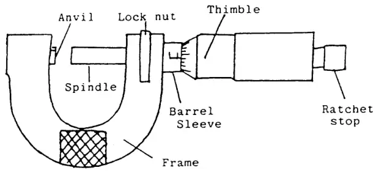

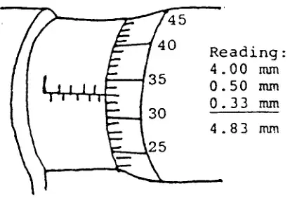

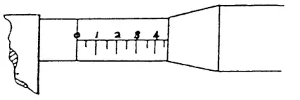

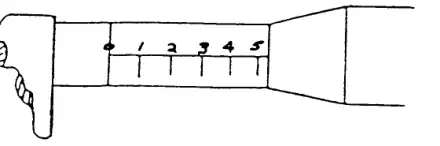

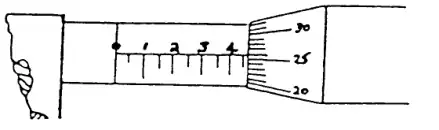

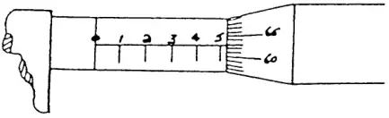

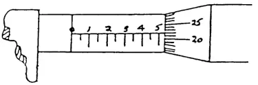


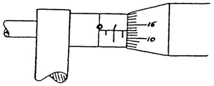

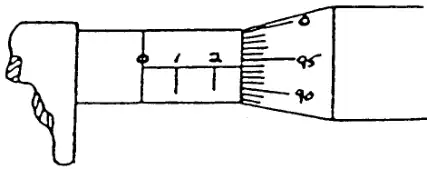

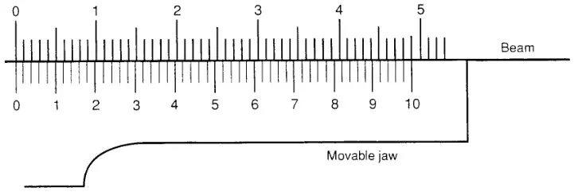

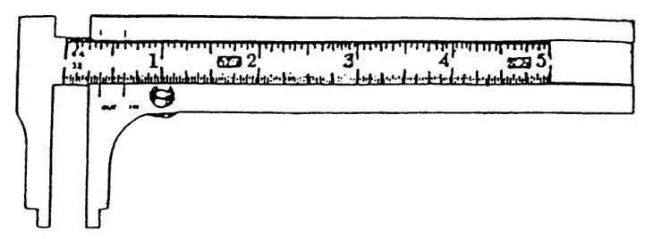

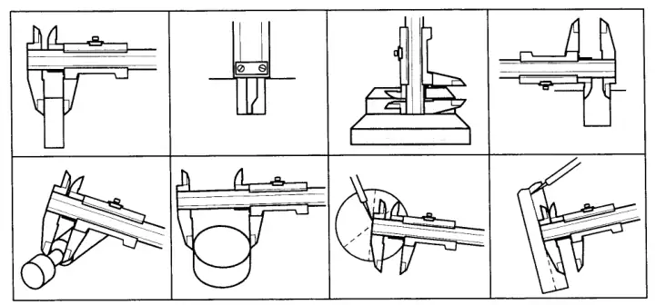

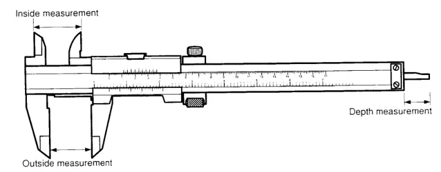

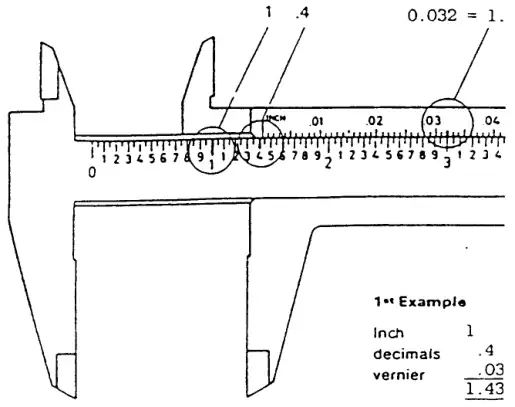

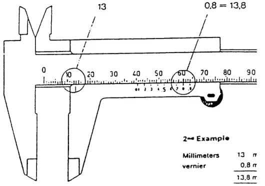

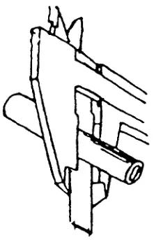

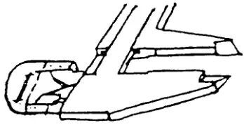

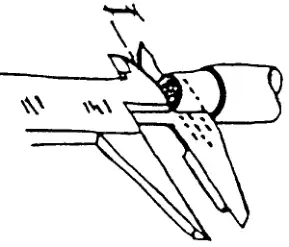

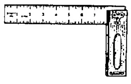


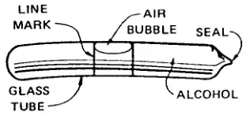

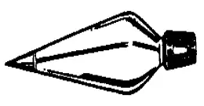

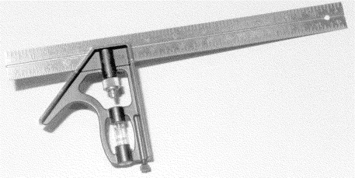

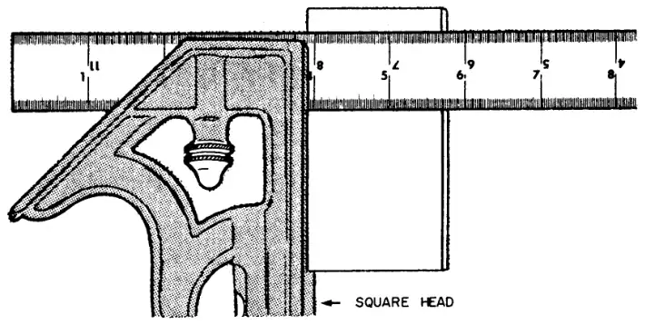

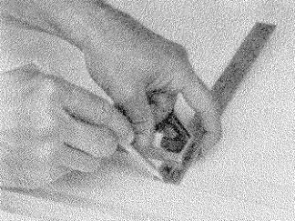

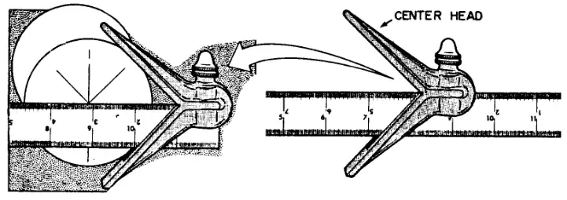

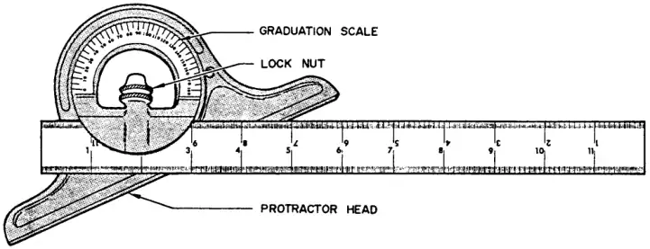


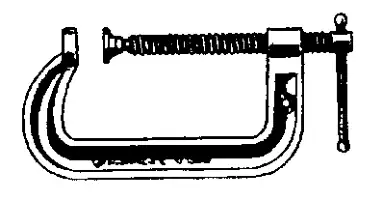

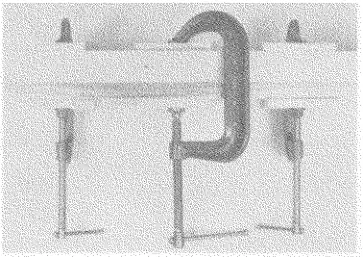

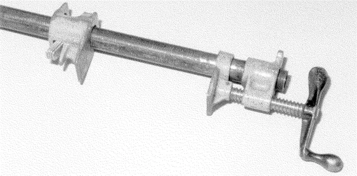

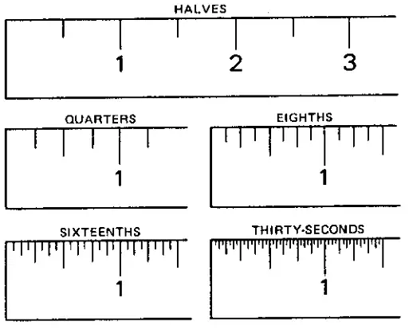

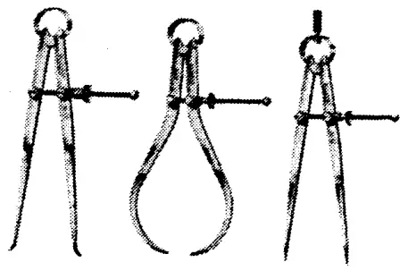

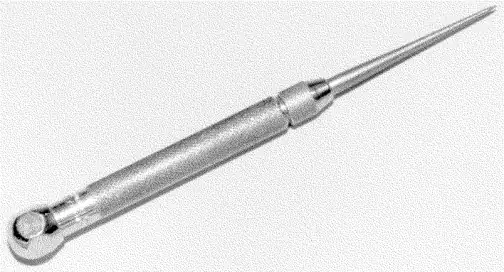

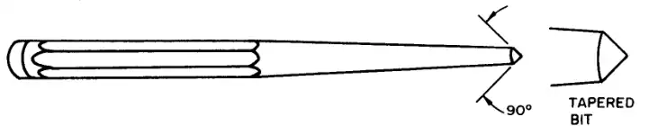

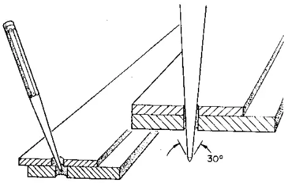

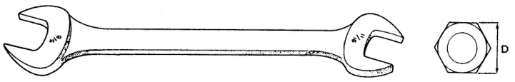

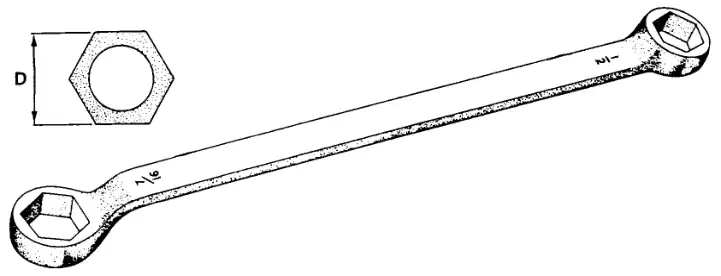

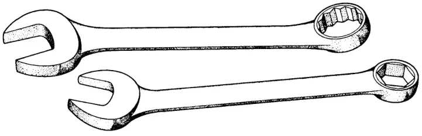

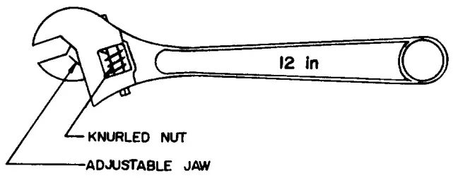

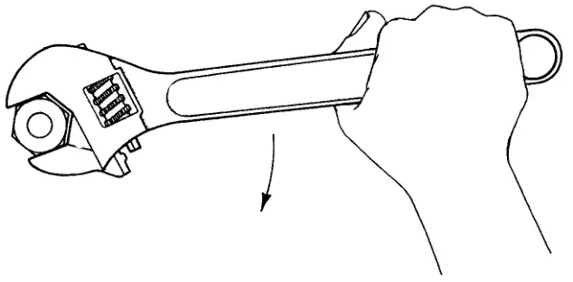

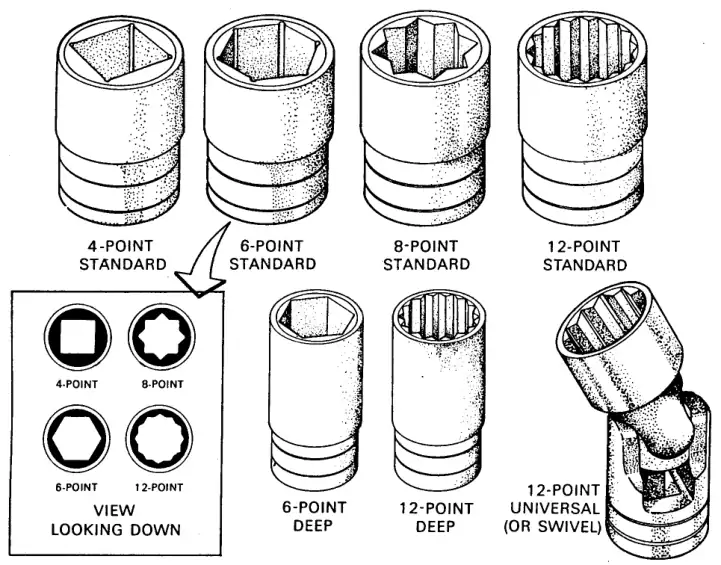

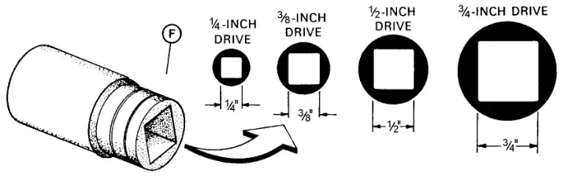

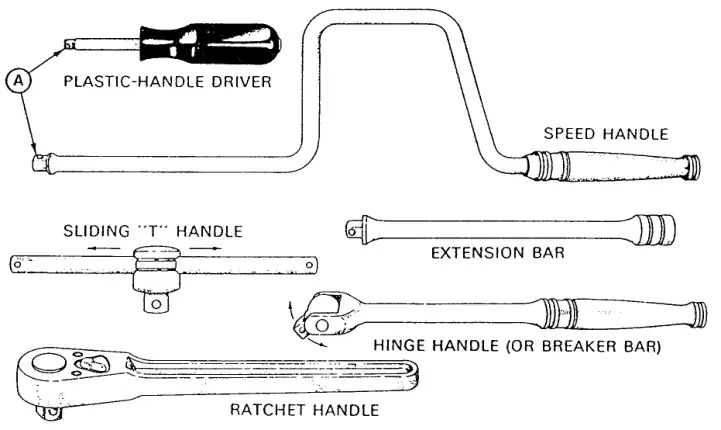

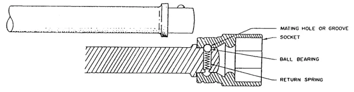

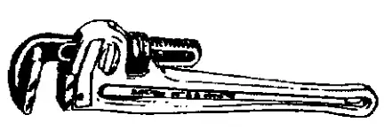

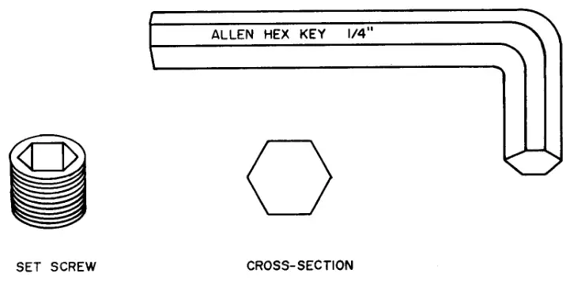

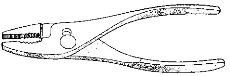


Handtools Hupdate (141)


STEL FAB LEVEL 1 LEARN GUIDE (JULY 2009) 10033401 (116)


Documents in this module
- 1215_Hand_Powertools/Hand tool identification.docx 2 pages, 16 pictures
- 1215_Hand_Powertools/MTLF 1215 Hand Tools Categories & Content.docx 4 pages
- B_Use_Tools_Equipment/BCIT Trade Tools Module.pdf 136 pages, 169 pictures
- B_Use_Tools_Equipment/Handtools Hupdate.pdf 134 pages, 141 pictures
- B_Use_Tools_Equipment/P6-1_LT-1.pdf 11 pages, 4 pictures
- B_Use_Tools_Equipment/P6-1_LT-2.pdf 7 pages, 5 pictures
- B_Use_Tools_Equipment/P6-1_LT-3.pdf 5 pages, 1 pictures
- B_Use_Tools_Equipment/P6-2_LT-2.pdf 10 pages, 10 pictures
- B_Use_Tools_Equipment/P6-2_LT-3.pdf 7 pages, 6 pictures
- B_Use_Tools_Equipment/P6-2_LT-4.pdf 8 pages, 4 pictures
- B_Use_Tools_Equipment/P6-2_LT-5.pdf 7 pages, 2 pictures
- B_Use_Tools_Equipment/P6-3_LT-1.pdf 15 pages, 5 pictures
- B_Use_Tools_Equipment/P6-3_LT-2.pdf 14 pages, 7 pictures
- B_Use_Tools_Equipment/PastedImage_rzq4idg1xylcddgkef656wetkvkaabjj00155974964.png picture, 1 pictures
- B_Use_Tools_Equipment/hand tools 2015.pdf 11 pages, 9 pictures